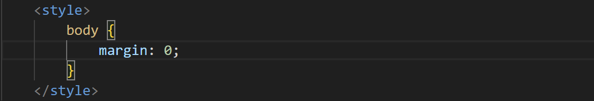
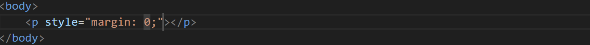
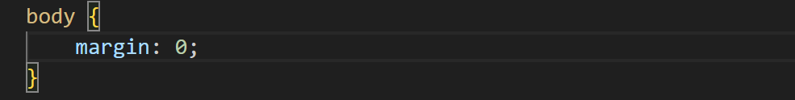
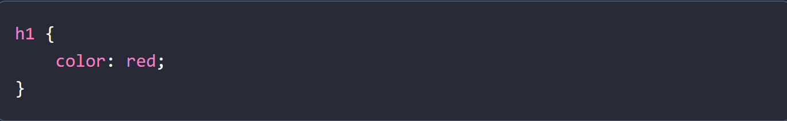
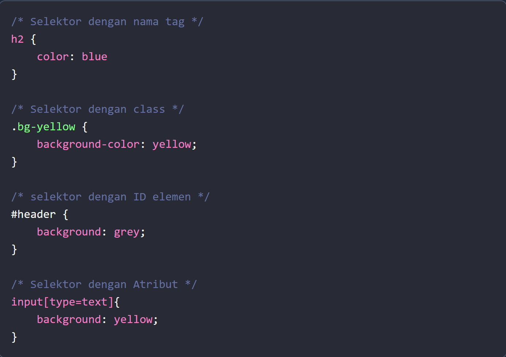
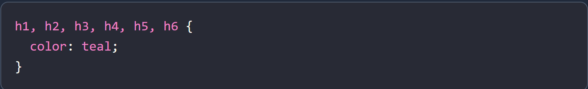
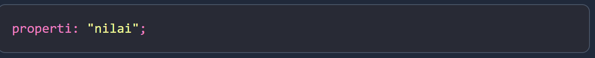
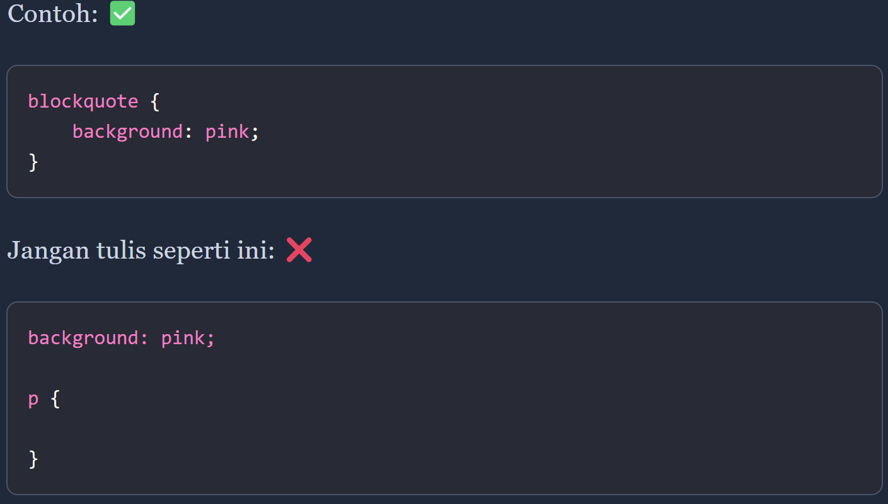

CSS adalah singkatan dari cascading style sheets, yaitu bahasa yang digunakan untuk menentukan tampilan dan format halaman website. Dengan CSS, Anda bisa mengatur jenis font, warna tulisan, dan latar belakang halaman.
Sebelum adanya CSS, tidak ada bahasa yang dipakai untuk memberikan style pada dokumen (web). Tampilan web terasa hambar dan kurang tertata.
1990
Tim Berners-Lee membuat web browser bernama NeXT browser/editor.
Pada browser ini, kita bisa membuat style sheet. Akan tetapi, sintaks style sheet-nya tidak ia publikasikan.10 Oktober 1994
Håkon Wium Lie membuat draft proposal bahasa CSS dan mengirimnya ke mailist www-talk dan www-html.
Wium Lie mempresentasikan draft proposal bahasa CSS (Cascading HTML Style Sheets) di acara Web Conference di Chicago. Orang pertama yang merespon proposal ini adalah Bert Bos. Ia saat itu sedang mengembangkan browser bernama Argo. Kemudian ia memutuskan untuk bergabung dengan Wium Lie untuk mengembangkan CSS.
Mei 1995
Implementasi bahasa CSS mulai dikerjakan. Pada bulan ini mail list (group) baru bernama www-style dibuat. Mai list menjadi tempat diskusi pengembangan CSS.
17 Desember 1996
CSS versi pertama atau CSS 1 akhirnya dirilis.
Mei 1998
CSS veri kedua atau CSS 2 dirilis. Pada versi ini ditambahkan dukungan media output.
Internal CSS : ditulis di dalam tag.
Inline CSS : ditulis di atribut elemen HTML;
External CSS : ditulis di file CSS terpisah dengan HTML.
Untuk memanggil css mengunakan external css, kita perlu mengetikkan "link rel="stylesheet" href="style.css" / nama dokumen css
Selektor adalah kata kunci untuk memilih elemen HTML yang akan kita beri style.
Artinya: Kita memilih semua elemen "h1", lalu diberikan warna teks red (merah). Selektor dapat berupa nama tag, class, id, dan atribut.
Contoh :
Blok deklarasi adalah tempat kita menuliskan atribut atau properti CSS yang akan diberikan ke pada elemen yang telah diseleksi.
Artinya, kita akan mengatur ukuran font dari tag sebesar 18px. Blok deklarasi dimulai atau dibuka dengan tanda kurung { lalu ditutup dengan }. Satu blok deklarasi, bisa dipakai oleh lebih dari satu selektor.
Contoh :
Ini artinya kita memberikan warna sama untuk semua tag "h1" sampai "h6".
Properti adalah sekumpulan aturan yang akan diberikan kepada elemen yang dipilih.
 